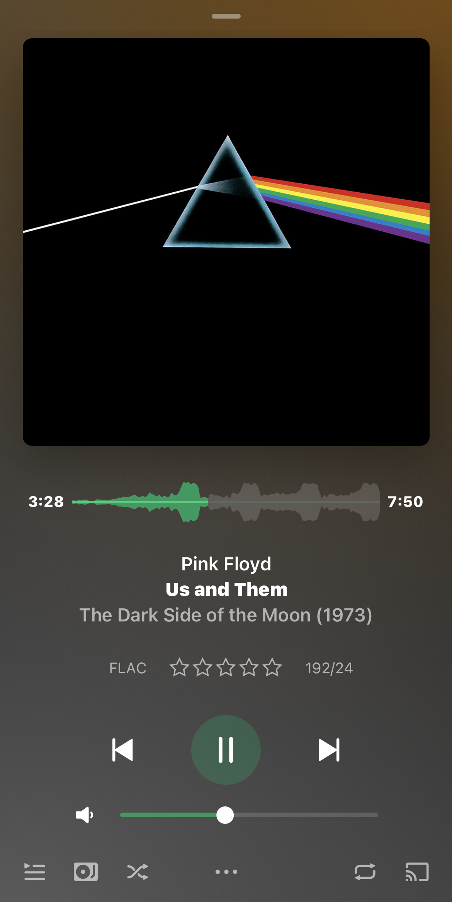

Feburary 29, 2024
1 Week ago, I've been contempating on if using Plex was a better option than Jellyfin (The Better Option) but now I've had made up my mind with a choice I seriously do not like :P
TLDR; Better clients, server is somehow more stable, subtitles actually sync
One of the biggest reasons I'd want to begin with is the fact that Plexamp has been made free and is a godsend for selfhosting your music compared to something like Jellyfin
I mean, just look at this and tell me you'd still use subsonic for music streaming!
(This is of course taken on an iPhone and I have no knowledge of android clients that may be better than plexamp for jellyfin)
Its honestly the closest you'll ever get to modern winamp from what I think winamp looks like (I didn't have a computer during the times of winamp)
Now, I don't know if this is pure laziness or actual planning but the desktop app just so happens to look exactly like the mobile app!!
It also just so happens to have different placements for different sizes (I found this on accident)
In the end, of course Jellyfin is the better solution, currently Plex would be the better solution for now but Jellyfin has started to catch up with Plex
Soooooo USE JELLYFIN
And don't forget to disable the remote forwarding thing on Plex if you ever decide to use it! Some Lastpass employee got the entire company breached via it!